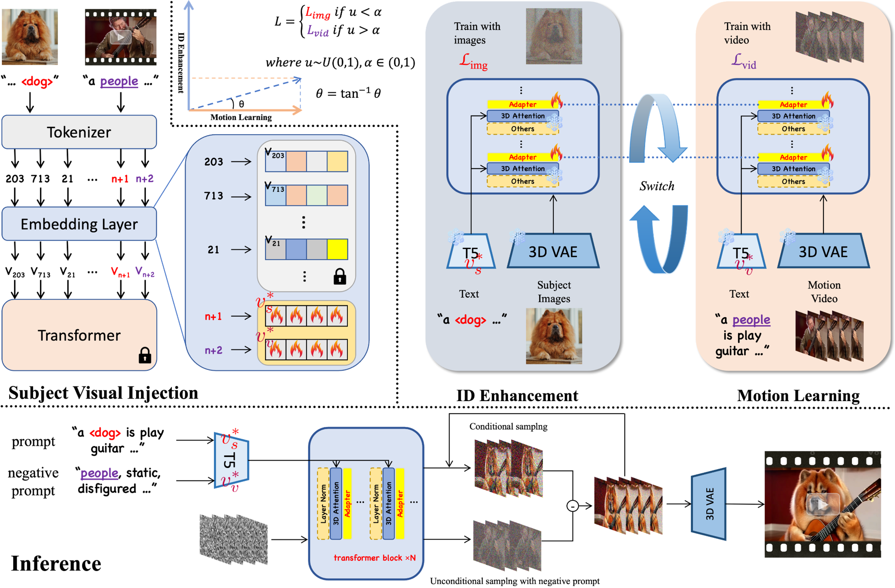

Anonymous Authors
将鼠标悬停在视频的不同区域查看描述
Demo showcasing personalized text-to-video generation with subject-motion composition
Recent Text-to-Video (T2V) diffusion models achieve impressive results, but personalization methods usually target either subject or motion and are limited to U-Net backbones, lacking combined subject-motion customization on DiTs due to their coupled 3D spatiotemporal attention.
In this work, we propose a novel method for jointly personalizing subject identity and motion within DiTs with 3D attention. Our method adopts a two-stage pipeline. First, we apply textual inversion to encode both the target subject and the subject from video as learnable tokens. Second, we inject adapter into the transformer and fine-tune it via images and video dynamic switching with the video token.
This design leverages images to enhance subject fidelity and video to guide motion learning with appearance guidance from the video token, addressing the challenge of coupled spatiotemporal attention in transformers. To mitigate identity leakage from video frames, we further apply the video token as negative prompt during inference. Extensive experiments show that our method enables effective combination personalization in DiTs with 3D attention, achieving high-quality personalized video generation. We also release our subject-motion dataset to support research on Personalized T2V.

Figure 1: Overview of our two-stage pipeline for joint subject-motion personalization in DiTs with 3D attention.
A <dog>, is running fast on the beach, with the sea and blue sky in the background. There are also low hills in the distance.
a <cat>, playing quitar The setting includes a red wall and a white wall, withwarm lighting that creates a cozy atmosphere. The focus is on the <cat>'s handsand the guitar, highlighting their playing technique. Realistic style.
A <cat> is surfing on a surfboard at the beach, balancing on the board andbriefly riding the waves. The water is clear and turquoise. The <cat> is playing1nthe water, bobbing with the waves. The scene is full of fun, peace and tranquility
a <stitch>, playing quitar The setting includes a red wall and a white wall, withwarm lighting that creates a cozy atmosphere. The focus is on the <stitch>'s handsand the guitar, highlighting their playing technique. Realistic style.
a <wolf>, playing quitar The setting includes a red wall and a white wall, withwarm lighting that creates a cozy atmosphere. The focus is on the <wolf>'s handsand the guitar, highlighting their playing technique. Realistic style.
We have released a subject-motion dataset to support research on Personalized Text-to-Video generation. The dataset includes carefully curated video samples with various subjects and motion patterns.
Access Dataset on HuggingFace@article{your2025personalized,
title={Personalized Text-to-Video under 3D Attention: Subject–Motion Composition via Joint Textual Inversion and LoRA},
author={Anonymous Authors},
journal={arXiv preprint arXiv:XXXX.XXXXX},
year={2025}
}For questions or inquiries about this work, please contact us at:
anonymous@example.com